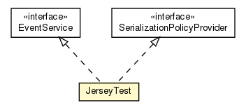

hu.sch.kfc.server
Class JerseyTest

java.lang.Object
 hu.sch.kfc.server.JerseyTest
hu.sch.kfc.server.JerseyTest
- All Implemented Interfaces:
- com.google.gwt.user.client.rpc.RemoteService, com.google.gwt.user.server.rpc.SerializationPolicyProvider, EventService
@Singleton
public class JerseyTest
- extends java.lang.Object
- implements com.google.gwt.user.server.rpc.SerializationPolicyProvider, EventService
|
Method Summary |
com.google.gwt.event.shared.GwtEvent<?> |
getEvent()
|
com.google.gwt.user.server.rpc.SerializationPolicy |
getSerializationPolicy(java.lang.String moduleBaseURL,
java.lang.String strongName)
|
org.atmosphere.jersey.Broadcastable |
publish(org.atmosphere.cpr.DefaultBroadcaster bc)
|
java.lang.String |
subscribe(org.atmosphere.cpr.DefaultBroadcaster bc)
|
| Methods inherited from class java.lang.Object |
clone, equals, finalize, getClass, hashCode, notify, notifyAll, toString, wait, wait, wait |
JerseyTest
public JerseyTest()
subscribe
@Suspend(scope=APPLICATION,
listeners=EventsLogger.class,
period=30,
timeUnit=SECONDS,
outputComments=true)
public java.lang.String subscribe(@Context
org.atmosphere.cpr.DefaultBroadcaster bc)
publish
public org.atmosphere.jersey.Broadcastable publish(@Context
org.atmosphere.cpr.DefaultBroadcaster bc)
getSerializationPolicy
public com.google.gwt.user.server.rpc.SerializationPolicy getSerializationPolicy(java.lang.String moduleBaseURL,
java.lang.String strongName)
- Specified by:
getSerializationPolicy in interface com.google.gwt.user.server.rpc.SerializationPolicyProvider
getEvent
public com.google.gwt.event.shared.GwtEvent<?> getEvent()
- Specified by:
getEvent in interface EventService
Copyright © 2011. All Rights Reserved.